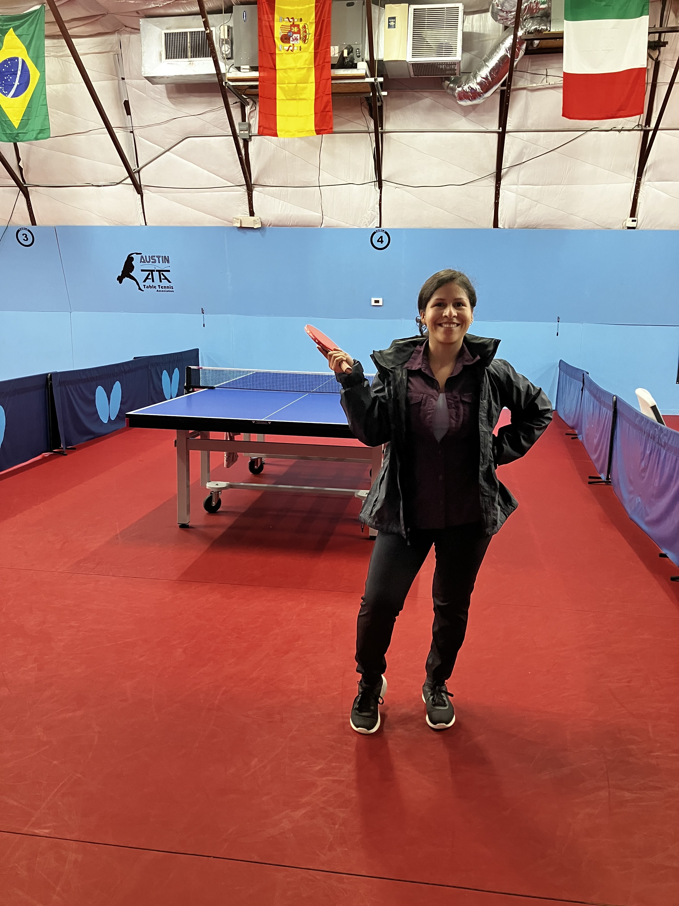

In September of last year, I made a decision to learn how to play table tennis which is often referred to as Ping Pong to the outside world. My first exposure to this sport was through the popular movie "Forest Gump," where soldiers played it during their leisure time. At the time, I believed table tennis to be more of a casual game, however, these past 7 months I have come to see Table Tennis as a competitive sport that requires intellect. Table tennis requires players to constantly make split-second decisions and engage in problem-solving, which can help to stimulate the brain and improve cognitive function.
To begin my journey of learning table tennis I commited to getting a monthly membership. Being a novice in sports, I faced the challenge of mastering the fundamentals of table tennis before I could start playing games. My initial hurdle was to keep my eyes fixed on the ball and learn how to return it to my opponent. Joining a community gave me the advantage of being able to learn from those around me. Other members gave me advice and I was also able to watch them play and try to mimic their movements.
My boyfriend and I started practicing table tennis together for at least three times a week. In the beginning, we had a routine of "patty cake," which our table tennis club referred to as a warm-up exercise of hitting the ball back and forth in a consistent manner. Although this may appear to be a basic and repetitive practice to an outsider, this exercise helped me to develop an intuitive sense of how to make subtle adjustments while playing. Over time, this provided a foundation for learning a variety of different types of hits.
Around a month into my practice sessions, I joined Monday League to learn the official rules of table tennis. This gave me a chance to play against a wide range of players including children, the elderly, individuals of my age group, and other female players. Unlike my practice sessions, league matches demanded a higher level of attention and adaptability as I had to be alert and anticipate my opponents' moves. I learned game decorum like the need to call out the store every time I serve and to switch to the other side of the table after every game.
After months of learning the basics it was time for me to seek improvement and take a few classes. I bought a pack of 6 sessions to train with a coach one a week for a month an a half. Working with a coach introduced me to drills that I could use to optimize my practice time. I was also exposed to a whole range of new moves that I could aspire to learn in the future. At month 5 I attended a local tournament where I had the opportunity to play with other people at my amateur level. Seven months in I'm still excited about table tennis and looking forward to developing my skills.